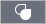
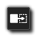
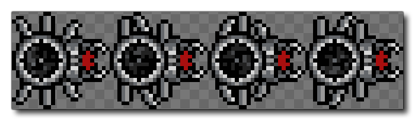
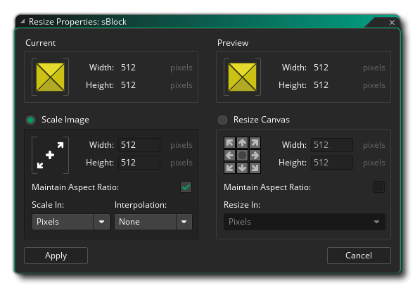
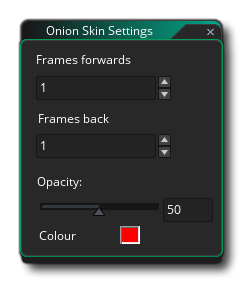
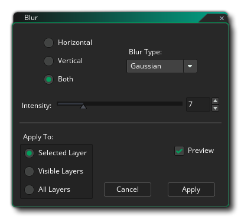

El editor de imágenes es donde puedes crear tus propios sprites o editar los que hayas importado o creado anteriormente. Si ha utilizado alguna herramienta de imagen anteriormente, debería familiarizarse con esto, pero hay algunas cosas que debe tener en cuenta al usar el editor de imágenes de GameMaker Studio 2, que puede no ser inmediatamente evidente:
- Cuando creas varios cuadros, puedes dibujarlos mientras se animan. Por lo tanto, si presiona el botón de reproducción en la barra de Control de fotogramas, y luego selecciona un pincel y comienza a dibujar en la ventana del editor, verá que los cuadros se animarán en el editor y lo que dibuje se agregará al correspondiente marco en ese momento. Puede experimentar con diferentes velocidades de cuadros hasta que obtenga algo que le guste, pero una vez que tenga el truco de cómo funciona, estará creando efectos y sprites dinámicos en muy poco tiempo.
- Puede sacar la pestaña Editor de imágenes de la ventana principal del espacio de trabajo en su propia ventana. Esto puede ser útil cuando se usan monitores múltiples, por ejemplo.
- Cuando utiliza las funciones de copia para, por ejemplo, copiar una selección de una imagen, la selección copiada se agrega a su lista de pinceles. Esto significa que puede seleccionar una parte de una imagen y luego usarla en el resto de las herramientas de pintura para dibujar líneas, polígonos o simplemente pintar libremente. El pincel también se puede escalar y mezclar con un color. Tenga en cuenta que la funcionalidad Pegar no está pensada para ser utilizada internamente en el editor, ya que cualquier cosa que copie se agrega a la lista de pinceles y, por lo tanto, se puede seleccionar para "pegar" de esa manera. En cambio, pegar es simplemente para que capture algo de un programa externo y lo pegue en el Editor de imágenes.
- Puedes tener múltiples capas para cada sprite gracias al práctico editor de capas. Estas capas pueden ordenarse e incluso colocarse en carpetas para facilitar la creación de imágenes más complejas.
Esas son solo algunas de las características más avanzadas que ofrece el editor de imágenes. Para conocer el rango completo de características, lea los elementos a continuación que detallan las funciones de cada parte del editor:
Esta parte de la ventana muestra los cuadros en el orden en que serán animados. Puede hacer clic en el botón (+) a la izquierda para agregar más cuadros o usar el Menú de imagen, y también puede hacer clic y arrastrar cualquiera de los marcos para cambiar su posición a lo largo de la línea de tiempo. En la esquina superior izquierda de la Vista de fotograma, puedes activar Onion Skinning , lo que significa que en un solo cuadro de cualquier animación de sprite, puede elegir ver cualquiera de los fotogramas anteriores o siguientes como una capa semitransparente debajo del marco de imagen que está editando actualmente. Lo bueno de esto es que cada fotograma se dibuja un poco más claro que el anterior para que pueda ver cómo la animación ha estado progresando de fotograma a fotograma mientras dibuja el siguiente. Habilitar esto mostrará algunos controles adicionales sobre los cuadros en los que puede hacer clic y arrastrar para establecer el número de fotogramas anteriores que se mostrarán, así como el número de cuadros siguientes.
Debajo del botón Cebolla, tiene el botón Control de bucle
utilizado para establecer si el sprite gira (vuelve al fotograma 1 cuando se alcanza el último fotograma) o ping-pongs (va hacia atrás a través de los fotogramas cuando se alcanza el último fotograma). El botón Reproducir
en la parte inferior es para iniciar / detener la vista previa de la animación.
Puede hacer clic en cualquier marco para seleccionarlo para editarlo, y un marco seleccionado tendrá un ícono de Eliminar
en la esquina superior donde puedes hacer clic para quitar el marco del sprite. También puede hacer clic
/
+
en marcos múltiples para seleccionarlos juntos, en cuyo caso al hacer clic en el icono Eliminar se eliminarán todos los marcos seleccionados.
Esta barra contiene los controles de cuadro. Aquí puede establecer la velocidad a la que se deben reproducir los cuadros de animación usando el cuadro de entrada a la izquierda. La velocidad de cuadro puede basarse en "Cuadros por segundo" o "Cuadros por cuadro de juego". El número total de fotogramas disponibles se muestra a la derecha junto con el fotograma actual que se ha seleccionado, y puede contraer esta barra (ocultarla) haciendo clic en
icono a la izquierda. Tenga en cuenta que el valor utilizado aquí para la velocidad de animación también establecerá la forma en que se anima el sprite cuando se usa en un juego, ya sea como un elemento sprite en una capa o como un sprite asignado a una instancia, aunque puede modificar esto en tiempo de ejecución utilizando las funciones y variables apropiadas.
Los controles de lienzo tratan diversos aspectos de cómo se muestra el lienzo del dibujo principal y sus contenidos. Las opciones son:
- Alternar cuadrícula de lienzo
: Esto activará / desactivará la cuadrícula de lienzo. Esta es una cuadrícula que GameMaker Studio 2 dibuja sobre el lienzo principal para dividirlo en secciones, y de forma predeterminada se establece en 1px de tamaño. Sin embargo, si haces clic en el ícono del Menú de Grilla
abrirá las opciones de la cuadrícula:
Estas opciones le permiten establecer el color de la cuadrícula y el alfa, así como los valores de celda para la cuadrícula a lo largo de los ejes X e Y. También tiene una opción para habilitar o deshabilitar el ajuste de cuadrícula aquí (deshabilitado de forma predeterminada).
- Controles de zoom de lienzo : Estos botones controlan el nivel de zoom de lienzo actual. Puede acercar o alejar y hacer clic en
El botón reiniciará el lienzo para que sea 1: 1 con la imagen que se está editando. Tenga en cuenta que también puede acercarse y alejarse utilizando
y presionando
para hacer que todo el lienzo de la sala encaje en el espacio de trabajo actual del editor (se acercará / alejará según sea necesario para que encaje).
- Lienzo dividido
: Al hacer clic en esta opción, se realizará un ciclo entre dividir el lienzo de forma horizontal y vertical, manteniéndolo en un único lienzo. Cuando está en vista dividida de lienzo, cada lienzo tendrá su propio conjunto de controles de Lienzo para que pueda acercar uno y otro, por ejemplo, y podrá editar cualquiera de los lienzos con los cambios reflejados en el otro lienzo. Para cambiar el alternar de vista de lienzo, puede hacer clic en las Opciones de división
Esta es la ventana principal de edición para sus imágenes. Aquí puede aplicar cualquiera de las herramientas a la derecha para pintar en la capa seleccionada actualmente. Puede pintar con el botón izquierdo o derecho del mouse (y asignar un color a cada uno desde el selector de color ) y usar cualquiera de los pinceles definidos desde la esquina superior derecha del editor. También puedes usar
+
Esta pequeña barra en la parte inferior muestra los diferentes valores para la posición del mouse y el ancho y alto de las herramientas de selección en el editor.
Aquí puede seleccionar el pincel para pintar. De forma predeterminada, tiene una selección de pinceles cuadrados y redondos de diferentes tamaños para usar, pero puede crear fácilmente su propio pincel pintando en la capa de la imagen, y luego seleccionando la parte que desea usar para el pincel nuevo y usando
clave y será eliminado.
La parte superior de esta sección tiene un número o muestras de color predefinidas entre las que puede elegir, y se pueden asignar a la izquierda
los botones del mouse, respectivamente, haciendo clic en ellos con cualquiera de los botones (también puede cambiar los colores entre cada botón haciendo clic en el ícono de la flecha al lado de las muestras). Los colores seleccionados se mostrarán a continuación como muestras junto a la imagen del mouse, y luego puede hacer clic en estos para abrir la ventana Selector de color:
Desde esta ventana puede definir el color utilizando cualquiera de los controles deslizantes y gadgets disponibles, o puede ingresar valores directamente para los valores RGBA o valores HVS. Tenga en cuenta que si hace doble clic
Por lo tanto, puede crear una paleta de colores personalizada en una imagen de sprite y usarla para configurar la paleta de cualquier otro elemento en el árbol de recursos, o puede abrir una imagen de elemento e importar la paleta de colores desde cualquier otro elemento en el árbol de recursos.
A continuación, enumeramos las herramientas que están disponibles por defecto con GameMaker Studio 2: tenga en cuenta que todas las herramientas se pueden usar con la izquierda
Esta es la herramienta de lápiz. Utiliza el pincel seleccionado para pintar en el color seleccionado para el botón del mouse, y puede establecer el tamaño desde la barra superior del editor de imágenes, así como habilitar / deshabilitar el suavizado (interpolación). Tenga en cuenta que también puede cambiar el tamaño y escalar cualquier pincel manteniendo presionada + Z luego haciendo clic
Esta es la herramienta de borrador. Utiliza el pincel seleccionado para borrar un área al hacer clic desde cualquier botón del mouse. Seleccionar esto también agregará herramientas adicionales a la barra superior del editor para permitirle escalar el pincel o habilitar / deshabilitar el suavizado (interpolación). Esta es la herramienta de cubo de pintura. Esto llenará un área de la imagen en función de la configuración de tolerancia alfa elegida, que puede cambiar utilizando el control deslizante que se muestra en la barra superior del editor.  Esta es la herramienta de eliminación de color. Cuando lo selecciona, puede hacer clic Esta es la herramienta de reemplazo de color. Cuando lo selecciona, puede hacer clic Esta herramienta dibujará una línea entre dos puntos. Haga clic una vez con cualquiera de los botones para crear el primer punto y luego haga clic nuevamente en otro lugar, cree otro punto y únase a ellos. La línea se dibujará utilizando el pincel seleccionado para crear el contorno, y puede editar algunas de las propiedades del pincel utilizando la barra superior del editor (tamaño, suavizado (interpolación), etc.). Esta herramienta dibujará un rectángulo relleno o un rectángulo delineado. Si hace clic en en la parte superior izquierda del icono, se detallará, mientras que al pulsar en la parte inferior derecha se completará y si necesita ambas opciones, puede seleccionar esa opción en la barra superior del editor de imágenes (o usar y haz clic para dibujar desde el centro de la posición del mouse.
Esta herramienta dibujará una elipse completa o una elipse contorneada. Si hace clic en en la parte superior izquierda del icono, se detallará, mientras que al pulsar en la parte inferior derecha se completará y si necesita ambas opciones, puede seleccionar esa opción en la barra superior del editor de imágenes (o usar Esta herramienta dibujará un polígono relleno o un contorno. Si hace clic en en la parte superior izquierda del icono, se detallará, mientras que al pulsar en la parte inferior derecha se completará y si necesita ambas opciones, puede seleccionar esa opción en la barra superior del editor de imágenes (o usar Esta es la herramienta spline. Utiliza el pincel seleccionado para crear una spline. Haga clic y mantenga presionado el botón del mouse para establecer un punto y luego arrastre el mouse para generar la spline, soltando el mouse y repitiendo para agregar más puntos y curvas. La spline se dibujará utilizando el pincel seleccionado, que se puede editar utilizando la barra superior del editor para establecer el tamaño y el suavizado (interpolación). La barra superior también tiene una configuración para Iteraciones que definirá qué tan suave es la spline resultante (los valores de amante serán más ásperos, más suaves y el valor predeterminado es 10). Esta es la herramienta de entrada de texto. Crea una nueva capa de texto donde puede escribir todo lo que necesite. Puede configurar la fuente para usar, así como el formato de la barra superior del editor de imágenes. La herramienta cuentagotas permite muestrear un color de la imagen que se está editando. Con esta herramienta puedes generar una selección rectangular. Puede cancelar una selección del menú Imagen o presionar .
Con esta herramienta puede "pintar" un área seleccionada utilizando cualquiera de los pinceles, incluidos los pinceles personalizados. Se aplican los mismos métodos abreviados de teclado que para la herramienta Lápiz. La herramienta de selección de varita mágica seleccionará áreas del mismo color en función del valor de tolerancia establecido. Si marca " Color only ", el valor alfa no se tendrá en cuenta. Puede cancelar una selección del menú Imagen o presionar Esta es la herramienta de rotación. Si tiene un área seleccionada con la herramienta Selección, al hacer clic en esta opción podrá rotar el área seleccionada en una cantidad arbitraria de 0 ° a 360 °. Si no tiene un área de la imagen seleccionada, esto le permitirá rotar el pincel actual. Para girar, simplemente mantenga presionado el botón izquierdo del mouse Esta es la herramienta espejo. Al seleccionar esto, se reflejará el pincel actual a lo largo del eje vertical. Esta opción no crea un nuevo pincel y solo afectará cómo se dibuja el pincel actual. Esta es la herramienta de volteo. Al seleccionar esto, se reflejará el pincel actual a lo largo del eje horizontal. Esta opción no crea un nuevo pincel y solo afectará cómo se dibuja el pincel actual. Esta es la herramienta de panoramización. Cuando selecciona esto, puede hacer clic
Puede crear capas en el editor de imágenes para diferentes partes de su imagen, y estas capas pueden manipularse y dibujarse usando los diferentes pinceles y herramientas. Para crear una nueva capa, simplemente haga clic en
ícono, y para eliminarlo nuevamente
icono. Las capas también se pueden pedir haciendo clic
Aquí puede nombrar la capa y establecer el modo de fusión (la forma en que debería "mezclarse" con las capas inferiores), eligiendo entre mezclas normales, aditivas, sustractivas o de multiplicación. Finalmente puede establecer la opacidad (transparencia) de la capa con un control deslizante, pero tenga en cuenta que esto es acumulativo con el valor alfa real de píxeles individuales; por ejemplo, si tiene píxeles que son 50% opacos y establece la opacidad de la capa en 50 %, los píxeles finales se dibujarán al 25% de opacidad.


Menú de contexto
Además de esas herramientas dentro del editor de imágenes, también hay una cantidad de herramientas adicionales disponibles desde la barra de menú en la parte superior del IDE: 
Estos menús se explican a continuación:
El menú Imagen tiene las siguientes opciones:
- Cortar fotograma / selección: corta el fotograma o la selección de la imagen (dependiendo del enfoque del editor). Si se corta una selección, esto se agregará a los pinceles.
- Copiar fotograma / selección - Copia el fotograma o la selección de la imagen (dependiendo del enfoque del editor). Si copia una selección, esto se agregará a los pinceles.
- Pegar fotograma / selección - Pegue el fotograma del portapapeles o pegue la selección del portapapeles a la imagen (según el enfoque actual del IDE). Al pegar en una imagen, debe tener en cuenta que esta opción está diseñada solo para su uso con datos del portapapeles de programas externos. Cuando corta o copia en el portapapeles desde una imagen en el Editor de imágenes, esto se agrega a los pinceles en la parte superior derecha del editor, y debe seleccionar un pincel para dibujar con la selección cortada / copiada en lugar de intentar pegarla en la imagen. También tenga en cuenta que varios programas tendrán problemas al pegar transparencias desde el portapapeles al editor de imágenes de GameMaker Studio 2 debido al formato utilizado por el portapapeles.
- Seleccionar todo: seleccione la imagen completa.
- Cancelar selección: borre cualquier selección de la imagen.
- Invertir selección: invierte la selección actual.
- Agregar fotograma: agrega un nuevo fotograma al sprite.
- Insertar fotograma: inserte un nuevo fotograma después del que se muestra actualmente.
- Eliminar las marcas seleccionadas: elimine el marco seleccionado del sprite (puede usar
- Importar imagen (s): cargue una imagen para usar como un cuadro desde el disco. Tenga en cuenta que puede cargar varios cuadros a la vez seleccionando varios archivos individuales para importarlos en la ventana del explorador. Una vez que haya seleccionado su archivo o archivos, se le mostrará la siguiente ventana Importar: Aquí puede elegir cómo se debe agregar la imagen importada al sprite actual, lo que le permite cambiar el tamaño de todo el lienzo, recortar o rellenar, y también establecer la posición "ancla" para colocar las nuevas imágenes.
- Convertir en marcos: esta opción convertirá una sola imagen en varios cuadros separados. Primero debe haber creado un solo cuadro con todas las partes de la animación (o haber importado una sola imagen de la tira) como el que se muestra a continuación:  Como se trata de una imagen única y queremos convertirla en marcos individuales, podemos usar esta opción que luego abrirá la siguiente ventana:
Aquí puede establecer cómo se dividirá la imagen individual para crear los marcos, establecer el número de cuadros, el ancho y el alto de los marcos y cualquier valor de compensación incluido.
- Importar imagen de la tira: esta opción abrirá un explorador de archivos y le pedirá que busque un archivo de imagen de una sola tira para crear marcos. Una vez que haya seleccionado una imagen, se abrirá la ventana Importar tira, exactamente igual a la opción Convertir a cuadros que se muestra arriba.
- Exportar a PNG: al seleccionar esta opción, se exportará el elemento sprite como una sola imagen PNG. Si el sprite tiene más de una imagen, se creará un sprite "strip" con todas las imágenes, una después de otra, y el nombre del archivo guardará automáticamente con " _stripX ", dónde " X "es el número de fotogramas exportados. Por ejemplo, se exportará un sprite de cinco fotogramas como" sprite_name_strip5.png ".
- Cambiar el tamaño de todos los cuadros: cuando selecciona esta opción, se abrirá la siguiente ventana donde puede establecer la forma en que desea cambiar el tamaño de todos los cuadros de animación que componen el sprite:  Puede elegir escalar la imagen o cambiar el tamaño del lienzo. Si elige escalar la imagen, simplemente seleccione el nuevo ancho y / o alto para cada cuadro, ya sea para escalar usando la misma relación de aspecto, y también para escalar en píxeles o porcentaje. Tenga en cuenta que al escalar puede activar o desactivar la interpolación, mientras que si está encendida, los píxeles se difuminarán o "difuminarán" a medida que se escala la imagen (en general, para el arte de alta resolución que desee, pero para el píxel artístico que desee) esto apagado).
La opción para cambiar el tamaño del lienzo no alterará los píxeles dentro de la imagen, sino que aumentará o reducirá el tamaño del lienzo en el que se dibujan las imágenes. Puede establecer dónde debe estar el "anclaje" para el cambio de tamaño utilizando los iconos de flecha, luego establecer el nuevo tamaño (en píxeles o en porcentaje) y establecer si se debe mantener la relación de aspecto de los fotogramas originales. Tenga en cuenta que al hacer que el marco sea más pequeño que las imágenes sprites originales, se recortarán los píxeles.- Recortar todos los fotogramas a selección: esta opción solo estará disponible cuando tenga un área de la imagen seleccionada en el lienzo del sorteo principal. Cuando elija esta opción, la imagen que se está editando (y todos los otros cuadros en la animación) se recortará a los límites de la selección.
- Recortar automáticamente todos los cuadros: esta opción le permite recortar todos los píxeles alfa cero de los bordes de un elemento. Esto tendrá en cuenta todos los marcos de imagen dentro del sprite, de modo que cada lado se recortará hasta el borde del que tenga el píxel alfa distinto de cero.
- Invertir fotogramas: al seleccionar esto, simplemente invertirá el orden de fotogramas del sprite.
- Espejo: esta opción le permite reflejar el marco actual de todos los marcos que componen el objeto a lo largo del eje vertical.
- Voltear: esta opción le permite voltear el marco actual de todos los marcos que componen el objeto a lo largo del eje horizontal.
- Gire todos los marcos (en sentido horario 90 °) - Esta opción rotará todos los fotogramas de la animación 90 ° en el sentido de las agujas del reloj.
- Gire todos los marcos (en sentido antihorario 90 °) - Esta opción rotará todos los fotogramas de la animación 90 ° en sentido antihorario.
El menú Ver tiene las siguientes opciones:
- 1: 1 - Escale la imagen para que sea 1: 1 con la resolución (es decir, el tamaño real) y céntrela en la ventana de edición de la imagen.
- Ajustar pantalla: escala la imagen para completar la ventana de edición de la imagen.
- Alternar cuadrícula - Alternar la cuadrícula de píxeles. Esto es lo mismo que el botón de cuadrícula que se encuentra en los Controles del Lienzo (explicado más arriba en esta página).
- Configuración de Cebolla - Cambia la configuración de la piel de cebolla. Esto abrirá la siguiente ventana donde puede establecer los cuadros mostrados por el botón de piel de cebolla, así como también la opacidad y el color de los marcos de piel. 
El menú Efectos es donde puedes agregar tus propios complementos de efectos personalizados y tiene los siguientes efectos por defecto:
- Desenfoque: aplique un efecto de desenfoque a la imagen. Puede establecer la intensidad y el tipo de desenfoque a usar (cuadro o gaussiano) y establecer si solo se desenfoca a lo largo del eje horizontal o vertical, o a lo largo de ambos. A continuación, puede elegir aplicar esto solo a la capa actual, las capas visibles o todas las capas. 
- Escala de grises: desaturar la imagen en una cantidad determinada. Puede elegir aplicar esto solo a la capa actual, capas visibles o todas las capas.